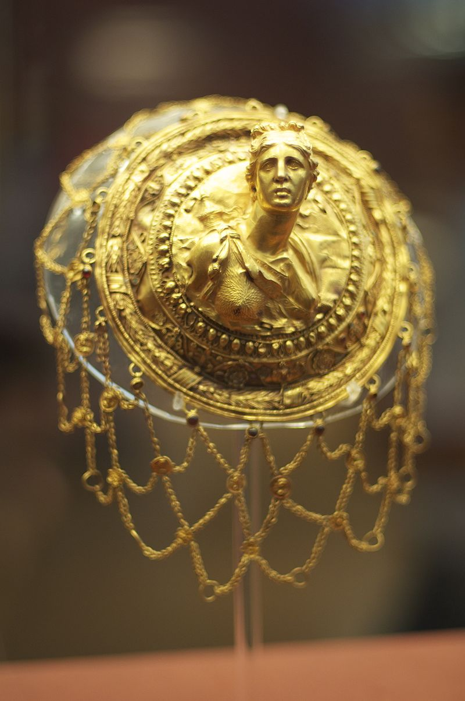

The history of jewellery is long and goes back many years, with many different uses among different cultures. It has endured for thousands of years and has provided various insights into how ancient cultures worked.
The earliest known Jewellery was actually created not by humans (Homo sapiens) but by Neanderthal living in Europe. Specifically, perforated beads made from small sea shells have been found dating to 115,000 years ago in the Cueva de los Aviones, a cave along the southeast coast of Spain. Later in Kenya, at Enkapune Ya Muto, beads made from perforated ostrich egg shells have been dated to more than 40,000 years ago. In Russia, a stone bracelet and marble ring are attributed to a similar age. Later, the European early modern humans had crude necklaces and bracelets of bone, teeth, berries, and stone hung on pieces of string or animal sinew, or pieces of carved bone used to secure clothing together. In some cases, jewellery had shell or mother-of-pearl pieces. A decorated engraved pendant (the Star Carr Pendant) dating to around 11,000 BC, and thought to be the oldest Mesolithic art in Britain, was found at the site of Star Carr in North Yorkshire in 2015. In southern Russia, carved bracelets made of mammoth tusk have been found. The Venus of Hohle Fels features a perforation at the top, showing that it was intended to be worn as a pendant. Around seven-thousand years ago, the first sign of copper jewellery was seen. In October 2012 the Museum of Ancient History in Lower Austria revealed that they had found a grave of a female jewellery worker – forcing archaeologists to take a fresh look at prehistoric gender roles after it appeared to be that of a female fine metal worker – a profession that was previously thought to have been carried out exclusively by men.